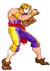
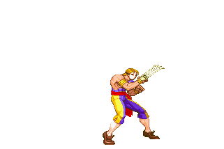
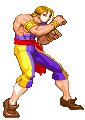
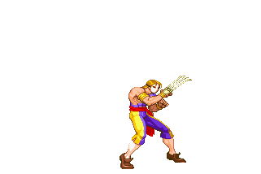
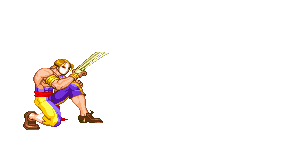
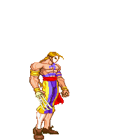

Vega (Street Fighter)
Vega (Street Fighter)
Stance fighters are characters that can switches between 2 or more forms that are called stances. These stances can change most or all of their move set and keep, enhance, or change their play style. Their complexity is based on how complicated their stances are and how it affects their normal fighting style. There is a bit of overlap with mix-up characters as they can use the different stances to set up their opponents in confusing scenarios.
Toolkit
 



- 2 or more stances
- Strong combos
- Average health pool
Pros


- Versatile
- Unpredictable
- Unique mix-up opportunities
Cons
- Takes time to switch stance
- Switching stances may cause blunder
- Technically complex play style
How should I play as this fighter?


Know what each of your stances does. There are different strategies in playing each one. Some may require more defense than offense, and others may be very unorthodox in their set ups. Learning them allows you to look at a situation and react effectively. Think through your set ups, and be aware how much time it will take to switch in between stances, so you don’t leave yourself vulnerable.
How can I beat this fighter?
 Learn what each of the stances are good and bad for, and counter accordingly. Some stances may take some time for the fighter to bring out, look for these gaps and capitalize.Examples:
- Vega (Street Fighter II, 1991)
- Alisa Bosconovitch (Tekken 6: Bloodline Rebellion, 2009)
- Ling Xiaoyu (Tekken 3, 1997)
Evelynn's Notes
Difficulty: ★ ★ ★ ★ ★Stance characters have a very steep learning curve due to the complexity of their play style and the knowledge needed to understand each of their stances. It can take a while for new players to grasp just one stance, but this makes it very rewarding when a player truly learns this character and unlocks its full potential.